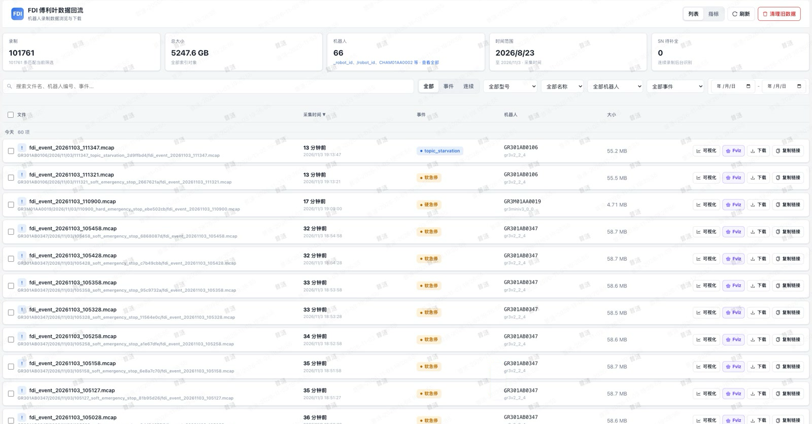
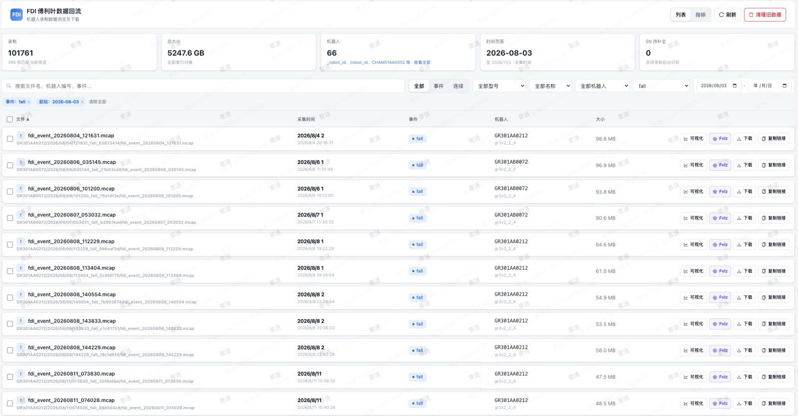

数据观测与异常取证
把短暂发生的机器人异常，转化为可回溯、可分析的事件数据。
本人职责数据录制回流、筛选器与异常取证开发
落地成果
- 累计录制回流事件
- 10 万+
- 已接入筛选器
- 20+ 个
- 安全类筛选器召回率 / 准确率
- 100% / 99%
- 真实摔倒数据
- 300+ 条
解决的问题
- 异常触发后再启动录制，容易缺少故障发生前的上下文，难以串联数据、日志和配置还原问题。
- 各业务对事件识别和录制范围的需求不同，需要可扩展的接入方式，减少每新增一类事件就修改主链路的成本。
- 接收、写盘与网络上传的执行边界需要分离，并考虑上传失败及重启后的恢复。
个人贡献
- 补齐异常发生前后的证据：构建 DDS 采集、环形前滚缓存与 MCAP 录制链路，解耦数据接收、录制和上传，支持异常事件取证及训练数据采集，累计录制回流事件 10 万+。
- 降低业务事件接入成本：设计统一接口、独立配置的可扩展筛选器架构，支持业务模块自行开发筛选器，自动收集事件前后数据、日志和配置快照，并支持异步上传、失败重试与重启恢复，已接入 20+ 个筛选器。
- 为机器人安全功能提供真实数据：开发摔倒、急停等安全类筛选器，回流召回率 100%、准确率 99%，累计回流真实摔倒数据 300+ 条，支撑问题回溯、执行器与运控算法安全保护功能的开发测试，以及版本准出和客户交付。
关键设计
采集、录制与上传解耦
接收侧将数据交给录制链路，录制负责前滚缓存、事件窗口和文件生命周期，上传任务独立处理网络传输。避免在接收回调中直接执行写盘或网络上传。
事件上下文取证
筛选器识别事件后保留触发前后数据，并关联日志与配置快照，形成可供回溯的事件材料。MCAP 作为录制载体，支持后续回放和分析。
筛选器扩展与回流恢复
通过统一接口与独立配置承接业务筛选逻辑，结合异步上传、失败重试和状态恢复，让业务模块接入事件时复用采集与回流能力。
项目展示
录制与数据回流，补齐异常前后的证据
- 构建 DDS 采集、环形前滚缓存和 MCAP 录制链路，解耦数据接收、录制与上传，保留异常发生前后的上下文。
- 支持异常取证与训练数据采集，累计录制回流事件 10 万+；通过集中检索和可视化回看还原事件过程。


事件数据回看
将事件录包接入可视化工作台，同步查看机器人姿态、状态消息和相机画面，辅助还原事件发生时的上下文。
扩展事件筛选器，统一取证材料管理
- 设计统一接口、独立配置的筛选器架构，支持业务模块自行扩展，已接入 20+ 个筛选器。
- 自动收集事件数据、日志和配置快照，支持异步上传、失败重试与重启恢复；配套文件和日志入口便于访问取证材料。
远程录包与目录管理
在统一入口浏览机器人录制文件与数据目录，按需访问事件材料，减少远程定位问题时反复切换工具的操作。
日志访问与在线联调
集中访问机器人日志和现场调试终端，结合录包文件开展异常取证与问题联调。
安全事件取证，支撑典型跌倒复盘
- 开发摔倒、急停等安全类筛选器，回流召回率 100%、准确率 99%，累计回流真实摔倒数据 300+ 条。
- 将事件筛选与多视角回放串联，用于问题定位、执行器与运控算法安全保护功能的开发测试，以及版本准出和交付。

典型跌倒案例：事件回放与问题复盘
以一次典型跌倒事件为例，联动回放机器人姿态、运动轨迹、状态曲线与相机画面，观察跌倒前后的变化，为问题定位和安全保护功能验证提供依据。